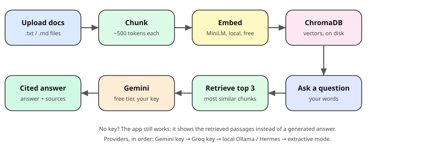

A tiny working RAG product, published on GitHub. Terminal first. Each step says what, why, and the exact command.
Last updated: 24 Oct 2026, 15:05 IST. Statuses are updated as steps complete.

What: Jae created a Gemini API key in Google AI Studio with his Google Pro account.
.env file that is never uploaded.Terminal check:
ls -la .env # exists locally, never committed
grep -c GEMINI_API_KEY .env # should print 1What: FastAPI app with local embeddings (all-MiniLM-L6-v2), ChromaDB storage, and a one-page UI. Ask a question, get an answer with the source chunks shown underneath. Providers: Gemini key first, then Groq, then local Ollama/Hermes, then extractive mode with no key at all.
Terminal:
cd ~/workspace/rag-quickstart
python3 -m venv .venv && source .venv/bin/activate
pip install -r requirements.txt
uvicorn app.main:app --reload --port 8000What: Start the server, open http://localhost:8000, and ask 3 questions about the seeded documents. Confirm each answer cites the right chunk.
Terminal:
curl -s http://localhost:8000/health
curl -s -X POST http://localhost:8000/ask -H 'Content-Type: application/json' \
-d '{"question": "What does ClaimSorted do?"}'What: Public repo named rag-quickstart under Jae9872.
Terminal (on Jae's Mac, where gh is logged in):
gh repo create rag-quickstart --public --description "Tiny working RAG starter: upload docs, ask questions, get cited answers. Free tiers only."What: Push the app, README, and seed docs. The .env file stays out via .gitignore.
Terminal:
cd ~/workspace/rag-quickstart
cat .gitignore # must contain: .env
git add . && git commit -m "Minimal RAG starter with cited answers"
git push -u origin mainWhat: README shows the 2 commands to run it, the free tiers it uses, and a demo. Share the repo link on LinkedIn with the demo.
What: Ingest cequor-platform or medimitr docs and ask the app questions about your own code.
Rules for this project: keys never go in chat or git. Nothing counts until it runs. One step at a time, terminal first.